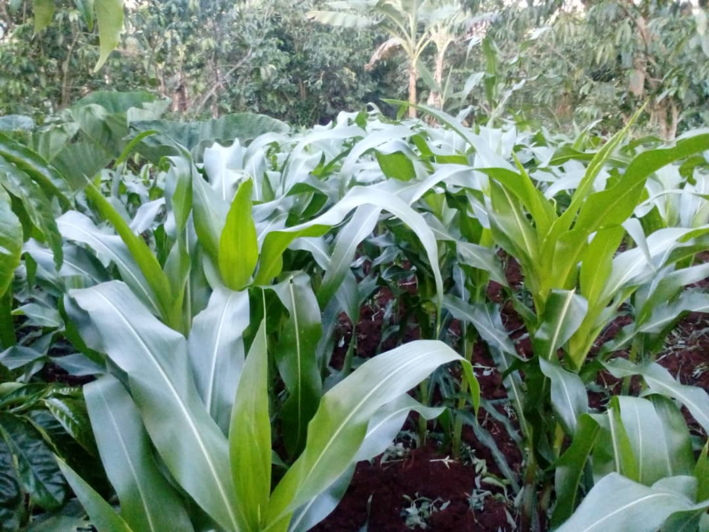
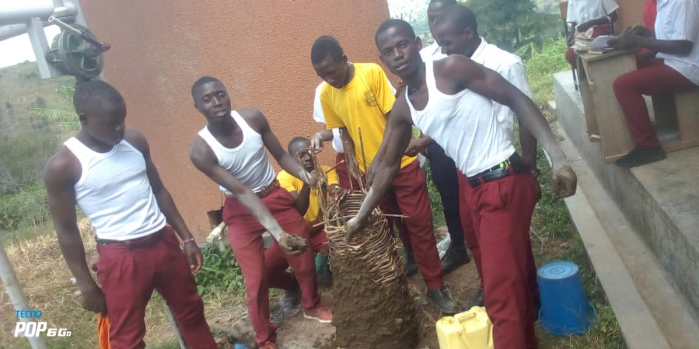
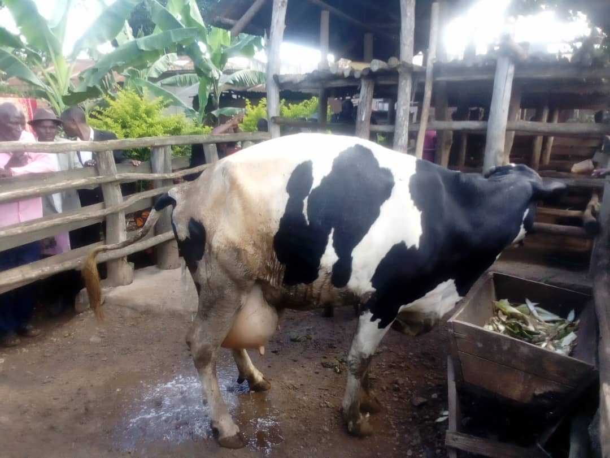

Agriculture club
Agriculture club is a community of students, farmers
and the agriculture enthusiasts who share a passion for sustainable
agriculture, food security and environmental stewardship. Our mission is to
promote agriculture awareness education and innovation while fostering a
community that values sustainable farming practices and supports local food
system.
Our vision
To be a leading organization in promoting sustainable
agriculture, supporting local food system and empowering the next generation
of agricultural leaders.
Our objectives
|  |
|  |
|  |
Educating members and the broader community about the
importance of sustainable agriculture, food security and environmental
conservation.
Collaborate with local farmers, producers and a small
businesses to promote local food security and the support small scale
agriculture and encourage sustainable food choice.
Provide opportunities for members to develop
innovative agriculture projects, products and services, and support
entrepreneurship agriculture sector.
Create a vibrant community of agriculture
enthusiasts, farmers and students and provide opportunities for networking,
knowledge sharing and collaboration.
Our activities
Host workshop, training session and seminars on
various topics related to sustainable agriculture such as organic farming,
permaculture and regenerative agriculture.
Organize farm visits and tours to provide members
with hands on experience and exposure to different farming practices and
techniques.
Establish and maintain the community garden, where
members can grow their own fruits, vegetables and herbs and learn about
sustainable gardening practices.
Support and facilitate members Led agriculture
projects such as Urban agriculture, innovative, School gardens and community
supported agriculture programs.
Join us
If you are passionate about sustainable agriculture,
food security and environmental conservation, we invite you to join our
community school.
Whether you are a student, a farmer or simply someone
who cares about future of our food systems, we welcome you to be part of our
journey.
Toil for the future